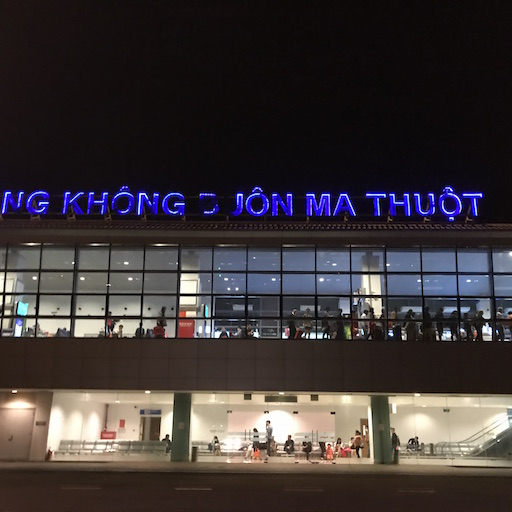
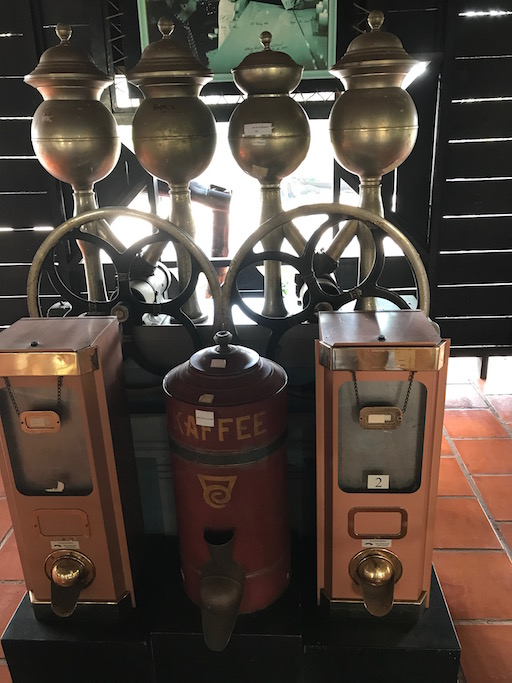
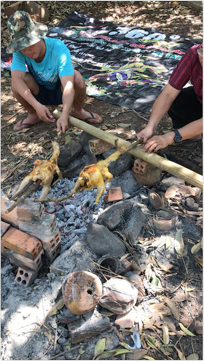

Đi Buôn
Cuối tuần rồi tôi có làm một chuyến đi Buôn (Buôn này to nhất cái Tây Nguyên) - Buôn Mê Thuột.
Bên dưới là một số trải nghiệm trong chuyến đi :D
Day 1

Cảnh sân bay Buôn Mê (BMV Airport - tôi hay gọi đùa là Ba Mẹ Vợ Airport). Những sân bay nho nhỏ thế này mỗi ngày chỉ có 6-10 chuyến nên khách đi xuống hay lên tàu bay đều đi bộ là chính (riêng tôi lại thích style này, hơn những style luồng ống hay nhét người vào xe bus như cái ống 😨). Không khí lúc đó trời đang trở lạnh man mát ! Rất cool !
Vừa ra sân bay, tôi bắt ngay Taxi tới ngã ba Hoàng Hoa Thám và Y-Ngông gặp anh bạn bên bàn nhậu lai rai cái lẩu bò, làm vài lon bia Sai Gon Larger (không hiểu sao miền núi lại chuộng uống loại bia này).
11PM, tan nhậu !! 😂 Anh em lại kéo nhau đi ăn Bún Đỏ (mấy ông anh khoe rằng đi Buôn Mê mà chưa ăn bún đỏ thì phí). Xui cái là khuya quá nên Bún Đỏ đã bán hết, thế là chuyển qua đi ăn cháo đêm ở đường Y-Jút (tên đường ở đây lắm chữ Y 😅 tạm gọi là Y-Cháo cho dễ nhớ).
Day 2
Sau khi ăn sáng nhẹ nhàng với tô bún bò sườn to tổ bố 😳 Tôi được chở đi lòng vòng thành phố tham quan.
Điểm dừng đầu tiên là quảng trường thành phố, nơi đang diễn ra chợ bông xuân nhộn nhịp. Chúng tôi gửi xe rồi đi bộ dọc đường Trường Chinh để ngắm hoa tết ở đây. Có gì lạ lạ quen quen 🤔
Hoa ở đây cũng không khác gì ở SG là mấy ngoài loại Lan Hồ Điệp ở đây đẹp hơn do khí hậu mát lạnh hơn.
Tiếp đến, chúng tôi dừng chân ở Làng Cà Phê Trung Nguyên. Chỗ này không khác gì một quán cà phê sân vườn lớn ở quận Gò Vấp là mấy. Chỉ có cái đặc biệt là có gian Bảo tàng Cafe chưng bày một số hiện vật về cafe ở Tây Nguyên.

Giờ tôi mới biết được từ “Cà Phê” bắt nguồn từ đâu (trước giờ chứ nghĩ do ngày trước có cái trái cầm cà cà là nó phê phê 😸 ). KAFFEE tính ra nếu viết bằng kiểu TELEX thì cũng ra đúng chữ KÀFÊ đó chứ :))
Trưa đến, chúng tôi đi tham quan tiếp khu du lịch sinh thái KoTam, vì không phải là fan chụp choẹt nên cũng không hứng thú lắm với những cảnh nửa thật nửa giả ở đây.
Chiều tối lại kàfê nhẹ nhàng, đúng là ở Buôn Mê cứ 50m là có một quán kàfê.
Day 3
4:30AM dậy sớm đi lễ nhà thờ Kim Mai gần chỗ ở. Đi trễ 2 phút mà nhà thờ bên trong đã kín chỗ (khác xa với SG). Thế là đành ngồi hàng ghế đá ngoài nhà thờ dưới cái rét run cầm cập. 😲
Lễ xong, làm một tô bánh canh cá lóc nóng hổi cho nóng người. Đồ ăn ở đây khá ok và giá rẻ hơn ở SG nhiều. Ăn xong lại kàfê tiếp !
Trưa, anh bạn rủ bạn bè ra vườn nướng gà nhậu vài lon cho vui.

Chiều về nhà ngủ thẳng một giấc tới 11PM quên ăn tối, thế là ngủ tiếp tới sáng với chiếc bụng đói meo 😿
Day 4
Lại là tiết mục ăn sáng và kàfê :)))
Tiếp theo chương trình, anh em lại kéo nhau đi câu cá miệt vườn cho nó dân dã. (Kiểu nghĩ tôi là một đứa thành phố mới lên quê chơi vậy).
Tới màn câu cá, mặc dù không phải là Cần Thủ nhưng tôi rất sát cá. Bằng chứng là tôi lại là người duy nhất câu được cá và lại là con to nhất cái hồ :))))) Và càng khó tin hơn khi con cá không phải cắn lưỡi câu mà do lưỡi móc vào “Ass” nó trong lúc nó chảnh chẹ khước từ miếng mồi (mấy ông đi cùng bảo là pha này max rùa - max hên).
Thôi thì rùa cũng được, có cá tươi bỏ bụng cũng zui ròi.
Thời gian thấm thoát, đã tới ngày cuối phải bay về SG lại. Trên đường ra sân bay, tôi lại được may mắn bắt được một anh taxi rất vui vẻ, lạc quan rồi tâm sự về cuộc đời thăng trầm.
Và rồi cũng tới cổng sân bay (ah mà phải công nhận là con đường vào sân bay ở BMT rất đẹp - nó làm tôi nhớ tới cung đường vào sân bay ở Singapore với hai bên hàng cây xanh mướt).
Hên là hôm ấy hãng hàng không Delay Airline đã có sẵn máy bay nên đi về SG rất đúng giờ.
SG hôm ấy vắng, buồn tênh …
Till next time.
Ref:
- Cover photo from VNTourism